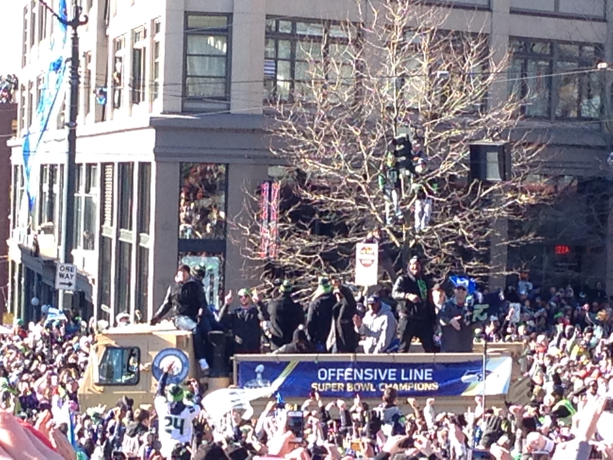

Image from 2014 Seahawks Super Bowl Parade. Source: My terrible iPhone 5 camera.
Football News
Seahawks beat Cardinals in Arizona
Russell Wilson continued his hot start on Sunday afternoon, going 22 for 28 with 240 yards and a single touchdown pass to emerging second year Tight End, Will Dissly. Wilson is off to the best start of his career posting the highest completion percentage (72.9), most yards (1,142), and is tied for most TD passes with 8. Also, he has yet to throw an interception. Some other notes on the game:
- Chris Carson got back on track with 104 yards on the ground and another 41 through the air
- Will Dissly continued his hot start, returning from a torn patellar tendon, catching touchdown number 4 on the season.
- Pete Carrol showed his trust in Chris Carson after fumble issues to start the season
Extra Notes
- Seattle Takes on the Rams next week
- - Rams have gotten off to slow start this season. Even though their record shows a solid 3-1, their play does not back that up
- Seattle is relatively injury free
- - After starting off the season banged up, most of the team is healthy. Other than the normal veteran off day, only Ethan Pocic remains on the injury report.